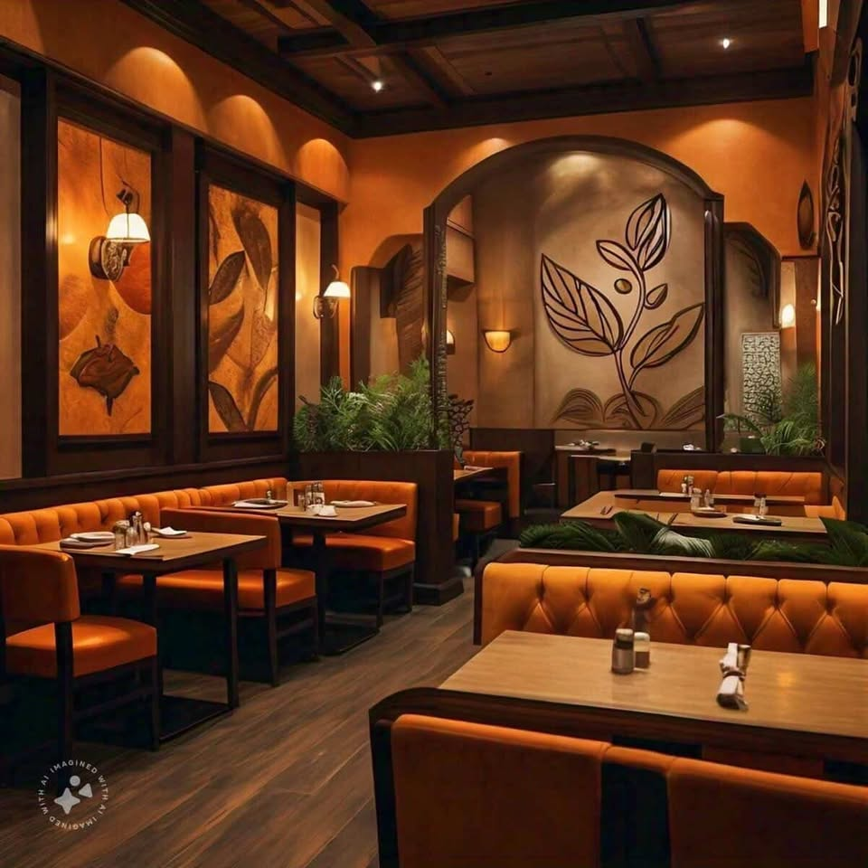
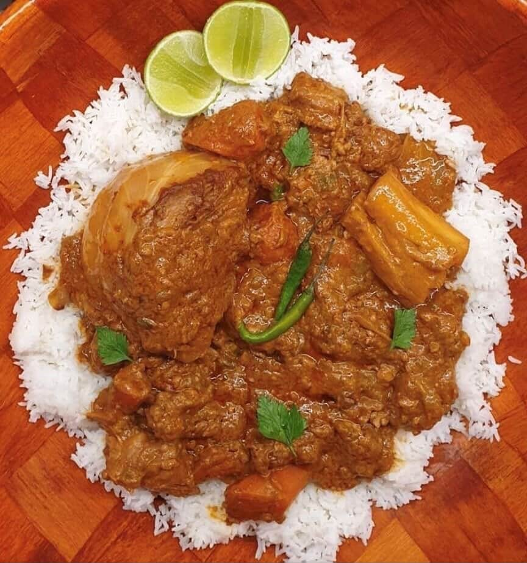
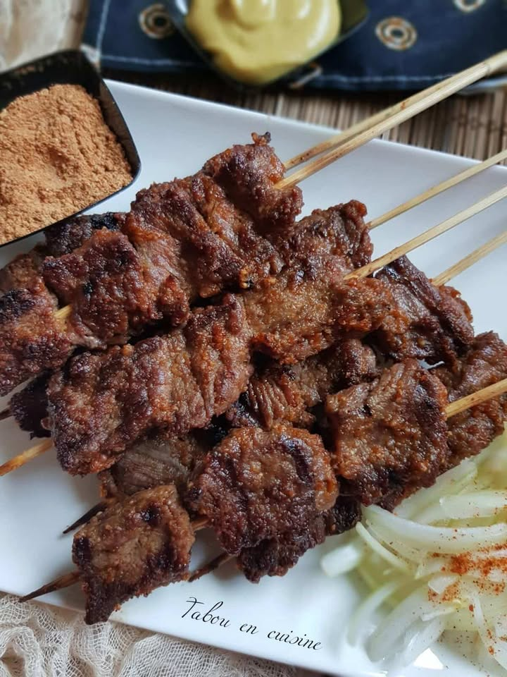

BIENVENUE CHEZ TERANGA FOOD
Le gout authentique
du Sénégal
Découvrez des plats Sénégalais préparés avec passion,
dans une ambiance chaleureuse inspirée de la téranga.

Découvrez des plats Sénégalais préparés avec passion,
dans une ambiance chaleureuse inspirée de la téranga.

TERANGA FOOD est un restaurant sénégalais situé à Dakar, mettant à l'honneur les saveurs authentiques du Sénégal. Nous vous proposons des plats traditionnels préparés avec passion dans une ambiance chaleureuse et conviviale inspirée de la teranga.
A propos de nous →


